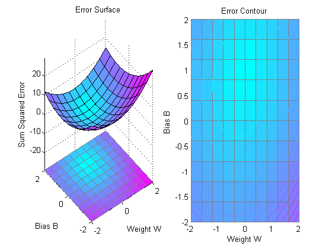
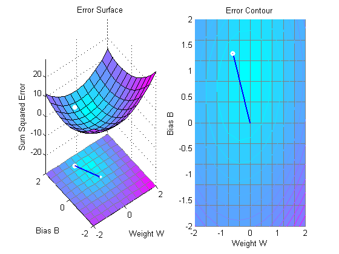
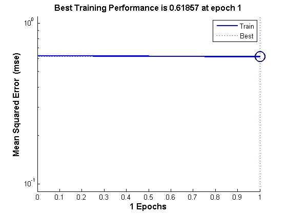

Too Large a Learning Rate
A linear neuron is trained to find the minimum error solution for a simple problem. The neuron is trained with the learning rate larger than the one suggested by MAXLINLR.
X defines two 1-element input patterns (column vectors). T defines associated 1-element targets (column vectors).
X = [+1.0 -1.2]; T = [+0.5 +1.0];
ERRSURF calculates errors for a neuron with a range of possible weight and bias values. PLOTES plots this error surface with a contour plot underneath. The best weight and bias values are those that result in the lowest point on the error surface.
w_range = -2:0.4:2;
b_range = -2:0.4:2;
ES = errsurf(X,T,w_range,b_range,'purelin');
plotes(w_range,b_range,ES);
 MAXLINLR finds the fastest stable learning rate for training a linear network. NEWLIN creates a linear neuron. To see what happens when the learning rate is too large, increase the learning rate to 225% of the recommended value. NEWLIN takes these arguments: 1) Rx2 matrix of min and max values for R input elements, 2) Number of elements in the output vector, 3) Input delay vector, and 4) Learning rate.
maxlr = maxlinlr(X,'bias');
net = newlin([-2 2],1,[0],maxlr*2.25);
Override the default training parameters by setting the maximum number of epochs. This ensures that training will stop:
net.trainParam.epochs = 20;
To show the path of the training we will train only one epoch at a time and call PLOTEP every epoch (code not shown here). The plot shows a history of the training. Each dot represents an epoch and the blue lines show each change made by the learning rule (Widrow-Hoff by default).
%[net,tr] = train(net,X,T); net.trainParam.epochs = 1; net.trainParam.show = NaN; h=plotep(net.IW{1},net.b{1},mse(T-net(X))); [net,tr] = train(net,X,T); r = tr; epoch = 1; while epoch < 20 epoch = epoch+1; [net,tr] = train(net,X,T); if length(tr.epoch) > 1 h = plotep(net.IW{1,1},net.b{1},tr.perf(2),h); r.epoch=[r.epoch epoch]; r.perf=[r.perf tr.perf(2)]; r.vperf=[r.vperf NaN]; r.tperf=[r.tperf NaN]; else break end end tr=r;
The train function outputs the trained network and a history of the training performance (tr). Here the errors are plotted with respect to training epochs.
plotperform(tr);
We can now use SIM to test the associator with one of the original inputs, -1.2, and see if it returns the target, 1.0. The result is not very close to 0.5! This is because the network was trained with too large a learning rate.
x = -1.2; y = net(x)
y =
2.0913